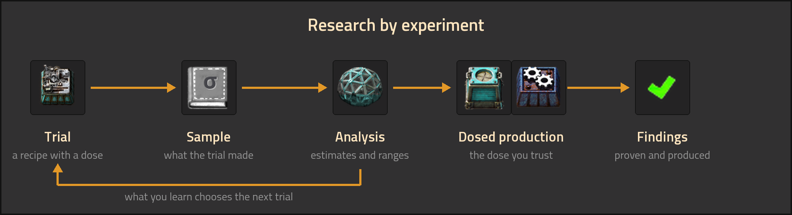
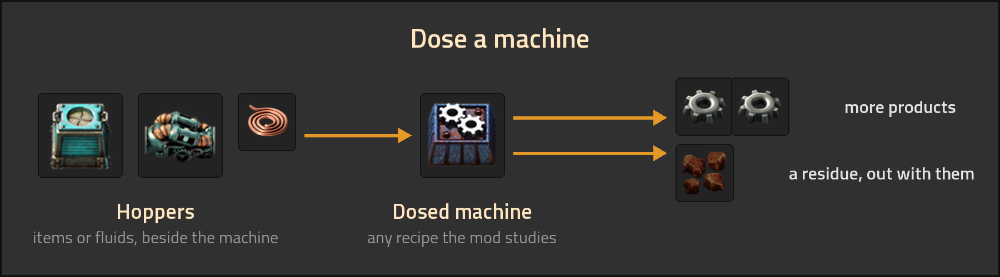
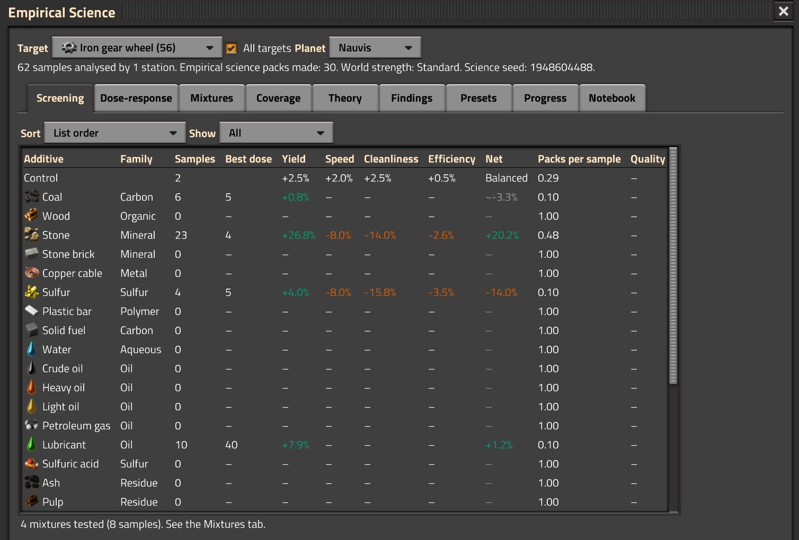
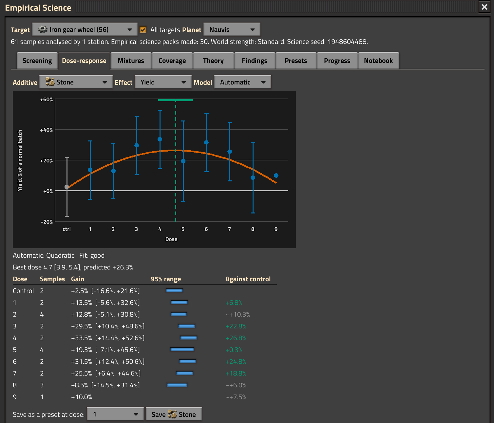
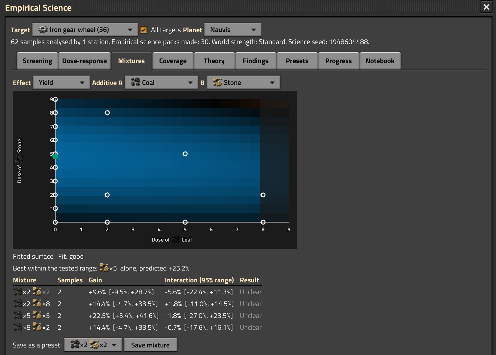
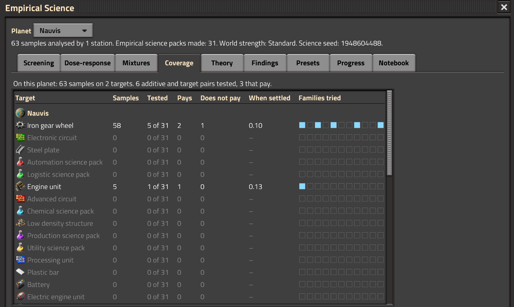
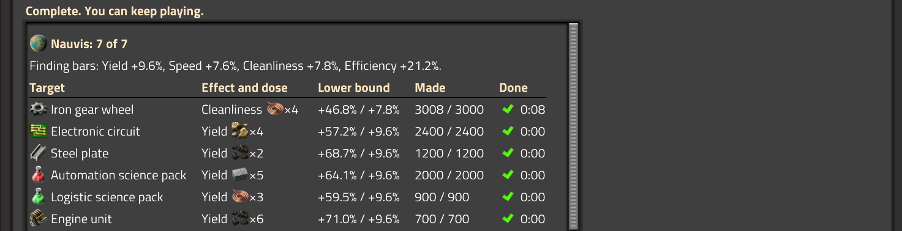

Empirical Science
Feed a machine an ordinary item beside its recipe, such as coal, stone or sulfur, and it can make more products, run slower or pollute less. Which additive helps which recipe is hidden, and it differs on every map. Test benches run trials, analysis stations read the samples, and hoppers dose your machines with what works.

How it plays
- Trials. A test bench makes a batch of a recipe with a dose of an additive, taken from a hopper beside it. Most of the batch comes out, and one sample with it.
- Analysis. An analysis station reads samples against a control, using science packs, and gives each result an estimate and a range. More samples narrow the range.
- Empirical science packs. Analysing samples makes empirical science packs, which labs use for the mod's technologies. A sample makes more packs when its question has few results.
- Production. A hopper doses the machines it touches that make a recipe the mod studies. A fluid hopper doses the machines along its sides. A dose that works makes more products per craft. Solid additives leave a residue, which leaves the machine with its products.
- Findings. A finding is an effect you proved and then produced with. Meet each reached planet's quota and enough major findings to finish. You can keep playing after.

A different world on every map
The effects are hidden and differ on every map. The mod studies 35 recipes and 33 additives. Additives belong to families and recipes to processes, so an additive that helps gears usually helps steel too. Results from another map do not apply to yours.
Testing every mixture of additives, at every dose, temperature and planet, would take about 19 billion trials. The Theory tab fits the family laws to your evidence and says which trials are worth running.
An additive that adds products can also slow the machine, change its pollution, or change its power use, and differently on different processes. Some additives help at a low dose and harm at a high one.
The Empirical Science screen
- Screening: every additive tried on a recipe, at its best dose: its effect on yield, speed, pollution and power, its net gain after its own cost, and the empirical science packs its next sample makes.

- Dose-response: one additive's results dose by dose, a fitted curve and the best dose with its range. Automatic picks the model, or pick one.

- Mixtures: additives dosed together, on a heat map.

- Coverage: which recipes and families you have tested, and where the gaps are.

- Theory: fits the family laws to all your evidence and suggests what to test next.
- Findings: each planet's quota and the major findings, with what is left to prove or produce, and when each was completed.

- Presets: save a dose you trust, then pick it from any machine's dose panel.
- Progress: samples, empirical science packs, settled questions, findings and products made with a dose, over game time.
- Notebook: one page of notes, shared by the force and saved with the map.
Research
- Analysis precision narrows every range. Analysis productivity analyses more samples per science pack.
- Additive mixing: several additives in one machine.
- Fluid heating: heaters that bring a fluid additive to its best temperature.
- Lab circuits 1 to 3: the circuit features below, in turn.
- Premixes of two additives, and catalysts activated from residues, are unlocked by evidence, not by research.
By era and planet
- Early: coal, stone, stone brick and copper cable.
- Oil era: sulfur, plastic, solid fuel, oils, acids, premixes and catalysts.
- Fluid heating: fluids and liquid premixes work best at a temperature of their own. Evidence is kept per temperature band. A curve still rising in the hottest band means the best temperature is higher.
With Space Age
- Vulcanus: the pressure heater reaches the hot optima on any planet, burning pressure charges made from tungsten carbide.
- Aquilo: the cryogenic plant chills a fluid with cold fluoroketone, and the fluid chiller cools liquid premixes, burning cold charges.
- Gleba: living additives (yumako mash, jelly, nutrients, pentapod eggs, bioflux) work best at a ripeness of their own. Age them in hoppers and chests, or dose them fresh. Eggs left too long hatch.
- Fulgora: recycling scrap sometimes recovers a scrap sample, a product that met an additive at some dose. A station reads it as free evidence. Scrap samples spoil fast and make no empirical science packs. Past a limit per question, scrap samples read as unreadable.
- Space platforms: space science and promethium science can only be studied in orbit.
With Quality
- A few quality additives raise the chance of a better product. Other additives do not change quality.
Circuits
Circuits are optional.
- A station's port sends its results to the wire on four pages: results per additive, what to screen next, one selected result, and the best tested composition.
- A station takes its target, its page and a selected additive from the wire. The selected additive's dose comes with it, so a lab can choose its next trial by itself.
- A machine's dose can be set by signal, so a line can retool itself.
- Hoppers can report how many of their machines are dosed, short of an additive, or full of residue.
Settings
- World strength (startup, set when the map is created): Standard, or Harsh, where trials cost more, results are noisier, and fewer additives pay.
- Empirical science packs in endless technologies (startup, on by default): vanilla's endless technologies, such as mining productivity and weapon damage, also cost empirical science packs.
- Empirical science packs in mainline technologies (startup): later vanilla technologies also cost empirical science packs.
- Derive targets (startup): makes every science pack a lab accepts something to study, for mods that do not register their own.
- Science seed (map setting): maps with the same science seed share the same hidden world. 0 uses the map's own seed.
Multiplayer and saves
- Evidence, presets, findings and the notebook belong to the force.
- Stations analyse one sample every five seconds each. A large lab needs several.
- Pre-1.0: updates can change saved stations, hoppers and evidence. The changelog says when.
Compatibility
- Requires Factorio Charts. Space Age and Quality are optional.
- Other mods can register their own recipes to study: see the
es-targetsmod-data.